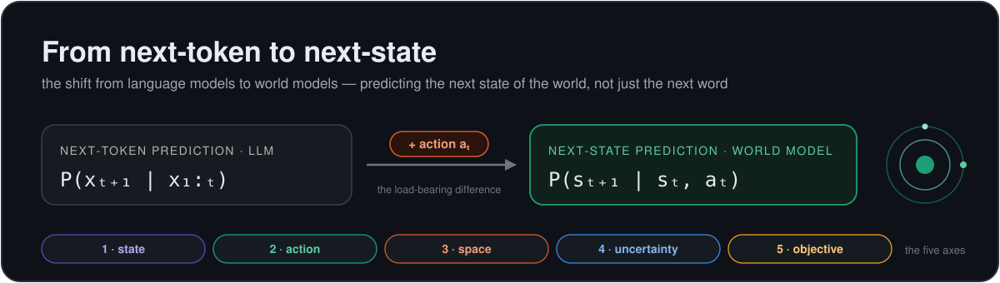
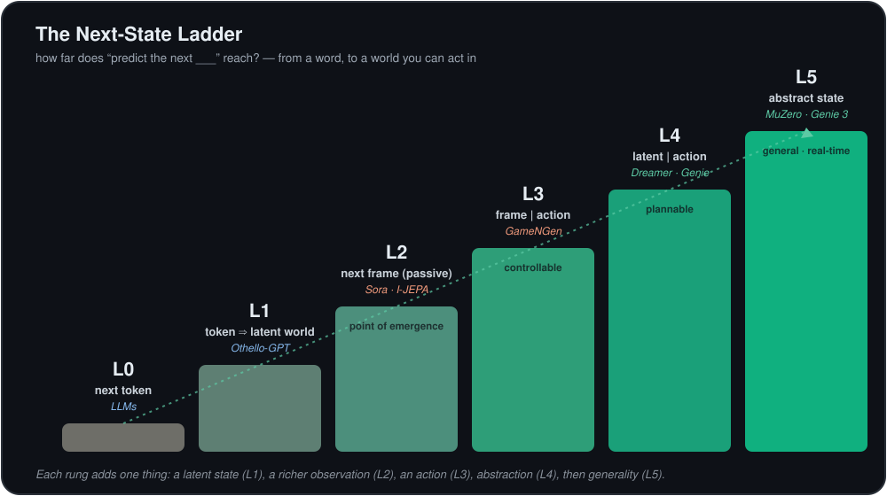

A curated, opinionated map of world models — the systems that learn to predict the next state of the world, not just the next word. Every work is tagged by the one thing that matters: what it treats as the next state.

An LLM predicts the next token. A world model predicts the next state — given what you do. Three things change, and each is load-bearing.
The variable moves from a token to a state; the conditioning gains an action aₜ — turning prediction from observational (what usually follows) into interventional (the consequence of an action, Pearl's do(·)); and the prediction space becomes a choice. Remove the action and next-state prediction collapses back into next-token prediction.
Don't read this field as two camps. Read it as a design space. Place any system on these five axes and you understand it — and exactly how it differs from an LLM.
Every system, plotted on two axes: what it predicts (raw pixels → abstract latent) and whether it is action-conditioned (passive → interventional). Hover any point. Progress runs up-and-to-the-right.
How far does “predict the next ___” reach? Each rung adds one thing: a latent state, a richer observation, an action, abstraction, then generality.

Forty-nine works, each tagged with the next-state it predicts — and a schematic thumbnail of its state turning into the next. Filter by lineage, prediction space, or conditioning; search; sort.
The same works on the Five Axes. Click any header to sort.
Eight decades from Craik's mental models to real-time interactive world models, by lineage.
The questions that decide whether world models become the substrate of general agents.
JEPA says reconstruction is a waste; DIAMOND shows visual detail matters for control. Nobody knows the right altitude to predict at — and it may be task-dependent. The field's central schism.
Generative world models drift and hallucinate over long rollouts. Genie 3 holds minutes; agents need hours, with object permanence and stable physics.
Autoregressive rollout amplifies small per-step errors. Planning depth is bounded by where the model stops being trustworthy.
The future branches. Does the model know it's uncertain, and can a planner use that? Diffusion and energy models are bets; calibration is open.
The web is full of un-actioned video. Genie's latent actions and V-JEPA 2-AC's few-hour tuning are early answers to “how do we add the action axis cheaply?”
Predicting every frame is the wrong granularity. We want the consequence of an action that unfolds over many steps — open since the options framework.
What is the loss for a good world model? Pixel MSE rewards the wrong thing; “useful for planning” is the real metric but hard to measure.
How far does next-token prediction's implicit world model actually reach — and where must sensorimotor experience take over?